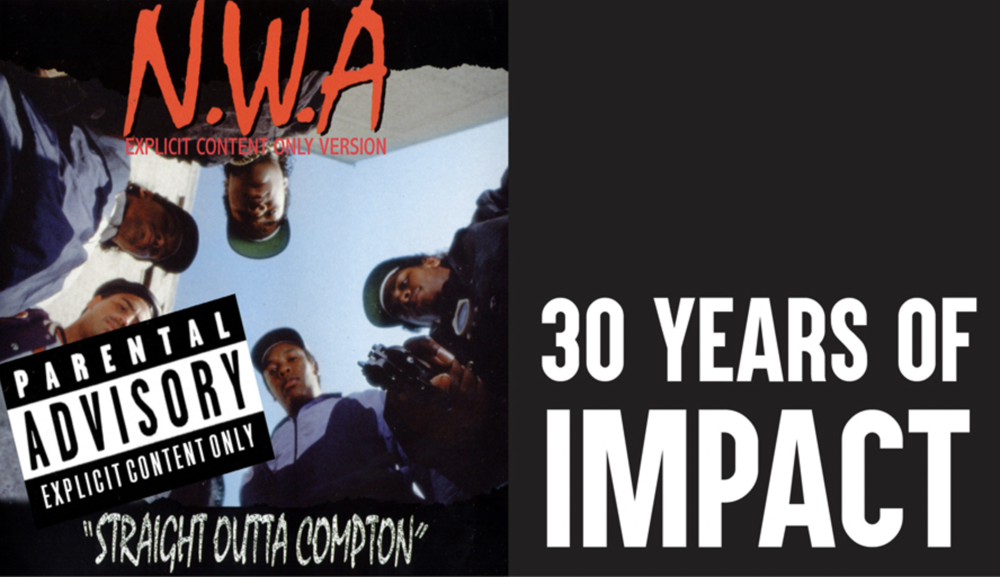

1930

L’ancêtre le plus proche du Rap est le spoken word (« mot parlé »), apparu au début des années 1930 avec le Golden Gate Quartet un groupe de Gospel avec la chanson "Preacher and the Bear". Bien plus tard, quelques groupes confidentiels dont The Last Poets à New York, The Watts Prophets en Californie, ainsi que Gil Scott-Heron.
Il s’agit à cette époque de la déclamation de discours sur des rythmes battus par des tambours africains avec la négritude comme thème de prédilection.
Parallèlement au spoken word et bien que par essence le hip-hop a surtout la funk comme racines, une autre influence possible dans la genèse du rap est l’apparition dès le début des années 1970, du toasting en Jamaïque. Des DJ/animateurs se mettaient à parler-chanter par dessus des mix instrumentaux de hits reggae (souvent placés en face B de ces derniers) à la radio ou dans les sound systems.
Ces mix conçus pour les sound systems allaient permettre le développement du dub, tandis que cette façon de chanter-parler par dessus définissait le toasting, ou autre ragga, et du coup les prémices de rap à venir. U Roy est l’un des meilleurs exemples. Le rapprochement avec le rap est évident.
Le hip-hop, lui, est né en 1974 avec DJ Kool Herc, et les premiers raps étaient réalisés par des MC (Maîtres de Cérémonie) qui faisaient des rimes toutes simples pour mettre l’ambiance en soirée.
Mais rendons à César ce qui appartient à César: Le premier morceau de rap proprement dit n’est pas américain. Il est… Italien. C’est le fameux titre d’Adriano Celentano de Prisencolinensinainciusol, qui voit le jour en 1972, sept ans avant King Tim III du groupe Fatback Band (1979).
En 1979, quelques mois après, le premier tube rap sort en 45 tours, c’est Rapper’s Delight du Sugarhill Gang, où la musique est clairement influencée par le funk. On peut noter aussi la parution de Magnificient Seven en 1980 du groupe punk anglais The Clash
1974

1982

En 1982, le morceau The Message de Grandmaster Flash confirme l’importance du rap et de ses thèmes dans le paysage musical. Ses textes, parfois très virulents contre les symboles du pouvoir, la police ou la justice, ont stigmatisé le rap pour une partie de la population. Pour David O’Neill, le succès de The Message a favorisé en France une conception politisée du rap contrairement à des racines américaines plus hédonistes. Les critiques violentes sont en fait assez minoritaires et l’aspect contestataire se limite le plus souvent à une dénonciation qui passe par les descriptions des problèmes sociaux tels que l’homophobie, le racisme, la pauvreté, lechômage, l’exclusion.
Les thématiques récurrentes, notamment dans le gangsta rap, se retrouvent autour des produits de consommation et des symboles du pouvoir, ainsi que des femmes, des voitures de luxe ou des armes à feu. Les rappeurs jouent sur ces fantasmes et se construisent des personnages en général sans lien avec leur vraie personnalité et leur quotidien réel. Des critiques ont été faites contre ces textes qualifiés de sexistes, matérialistes ou prônant la violence, par des hommes politiques et par une partie du milieu rap.
À Los Angeles le groupe de rap NWA est fondé par Dr. Dre, Ice Cube, Eazy-E, Mc Ren et Dj Yella en 1986, il sévit jusqu’en 1991 après avoir révolutionné le rap. En effet, alors que le rap new-yorkais produit un rap teinté de soul et de jazz à tendance consciente, les NWA créent le gangsta rap, musicalement très inspiré du P-Funk. Il s’agit de raconter leur vécu : les violences policières, les guerres de gangs, et de représenter leur ville Compton.
Leur album Straight Outta Compton est classé comme un monument du hip-hop. Ce groupe permet à la scène rap de la côte ouest d’avoir une visibilité médiatique. Cela est plutôt réussi puisque jusqu’au milieu des années 1990, le rap de Los Angeles domine[réf. nécessaire] l’actualité hip-hop (avec les premiers albums solos de Dr. Dre en 1992, de 2pac en 1991, de Snoop Dogg en 1993, Tha Dogg Pound composé de Daz Dillinger et Kurupt en 1995, etc.) pendant toute cette période avec le Gangsta rap et le G-funk (sample de funk de la côte ouest).
1986

1999

S’il est bien issu des populations noires américaines, le rap s’est démocratisé dès le début des années 1990 pour toucher également les populations blanches dont provient une part croissante des créateurs de rap, l’exemple le plus connu étant Eminem. Qui a su en 1999 entrer dans l'HISTOIRE du Rap et ce par la grande porte.
En effet, son album The Slim Shady LP se vendra à 283 000 exemplaires et se placera à la 2ème place du Billboard durant 100 semaines. D'autres rappeurs tireront leurs épingles du jeu durant cette période comme notamment Jay-Z, qui après la mort de Biggie sera en compétition avec Nas, un autre rappeur New Yorkais pour la couronne New York.